FACCIATA ESTERNA — 4 ante da 208,4 × 275,9 mm — piega a portafoglio834 × 276 mm
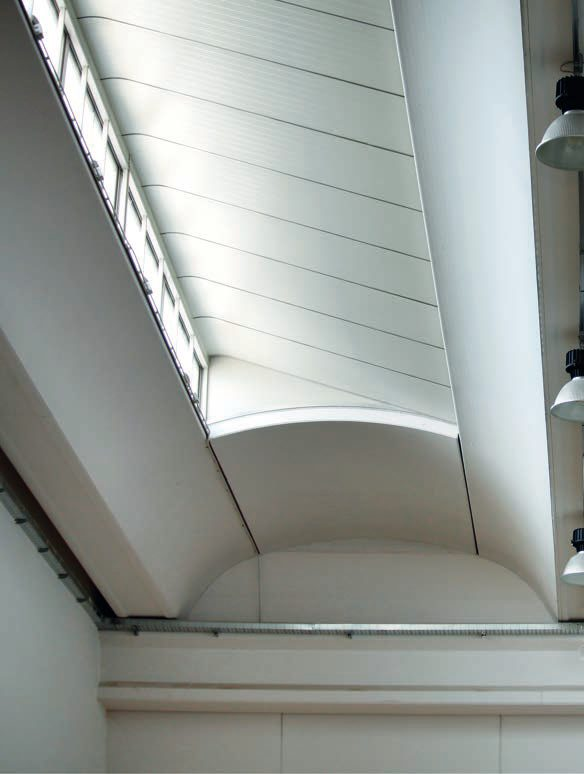
Via F.lli Kennedy 24
24060 Bagnatica (BG)
Tel 035 681239
info@prefabbricatimoioli.it
www.prefabbricatimoioli.it
24060 Bagnatica (BG)
Tel 035 681239
info@prefabbricatimoioli.it
www.prefabbricatimoioli.it

TECNOWING
Sistema di copertura
COPERTURA
ALARE
TECNOWING
ALARE
TECNOWING
Tegoli alari a “V” con interposti opachi o luminosi, per edifici industriali, commerciali e logistici.
Dove la forma prende volume
scopri la soluzione.
QR
segnaposto
modello 3D
segnaposto
modello 3D
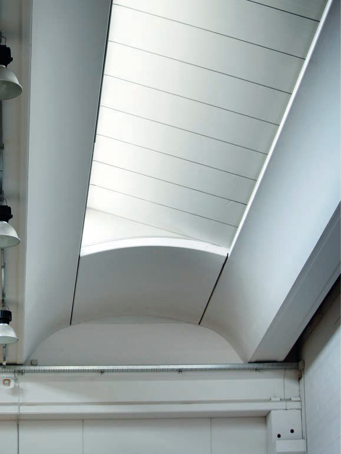
Intradosso Tecnowing in opera
Tegoli alari con interposto e lucernario continuo
FACCIATA INTERNA — apertura, geometria e prestazioni, sei soluzioni di interposto, componenti e dati834 × 276 mm
Sistema copertura alare
TECNOWING
Il Sistema TECNOWING trova largo impiego in edifici industriali, commerciali e logistici. Consente di alternare tra i Tegoli Alari elementi opachi o luminosi, lucernari continui o a shed, scelti in base alla destinazione d'uso.
La forma a “V” garantisce lo smaltimento delle acque verso l'esterno e la piena compatibilità con sistemi Sprinkler.
Geometria e prestazioni
33 mt
Luce netta massima
R180'
Resistenza al fuoco estendibile
110 cm
Altezza massima tegolo
6
Soluzioni di interposto
Sezioni del tegolo alare
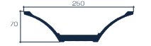
H 70 · L 250
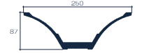
H 87 · L 250
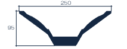
H 95 · L 250
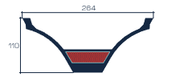
H 110 · L 264
Struttura tipo
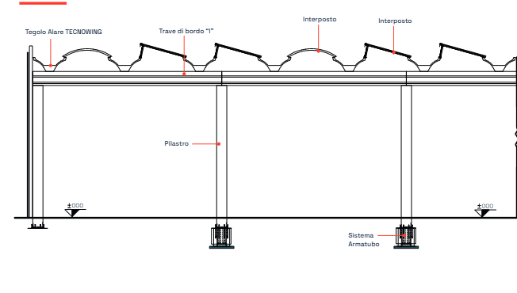
Vantaggi
Luce naturale modulabile
Isolamento termico elevato
Resistenza al fuoco
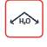
Smaltimento acque verso l'esterno
Flessibilità modulare interposti
Sei soluzioni di interposto
Ogni configurazione, una risposta.
Pannello sandwich
Interposto leggero ad alte prestazioni termiche e acustiche.
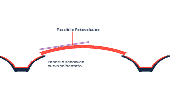
Pannello sandwich shed
Interposto a shed ad alte prestazioni con serramento verticale.
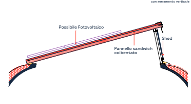
Coppella in CLS piana
Interposto in CLS con lastrina piana standard.
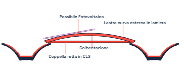
Coppella in CLS piana shed
Interposto a shed in CLS con serramento verticale per luce diffusa.
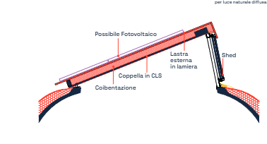
Coppella in CLS curva
Interposto in CLS con lastrina curva standard.
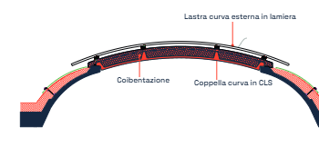
Coppella in CLS curva shed
Interposto a shed in CLS con serramento verticale per luce diffusa.
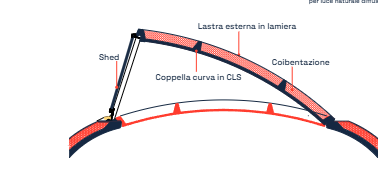
*Misure indicate in cm. Compatibile con impianti fotovoltaici, evacuatori di fumo e calore (EFC) e sistemi antincendio Sprinkler.
Componenti e dati tecnici
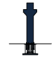
Pilastro con armatubo
Pluviali incorporati, mensole per impalcati o carro-ponte.
Travi a “I”
Precompresse, impieghi laterale e centrale.
Travi a “L” e “T”
Soluzioni speciali, impieghi perimetrale e centrali.
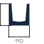
Travi a “U”
Ampio invaso per la raccolta delle acque su grandi superfici.
Altezza tegolo
70 · 87 · 95 · 110 cm
Larghezza modulo
In funzione dei carichi e della soluzione
Luce netta massima
33 metri
Resistenza al fuoco
Da R90' a R120', fino a R180'
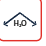
Tenuta e drenaggio
Sistema a “V”, scarico acque all'esterno
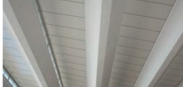
Luce naturale uniforme
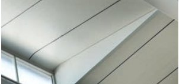
Finestratura inclinata
QR
segnaposto
modello 3D
segnaposto
modello 3D
scopri la soluzione.
Inquadra il codice per vedere il modello 3D del sistema applicato a un edificio.
Dove la forma prende volume